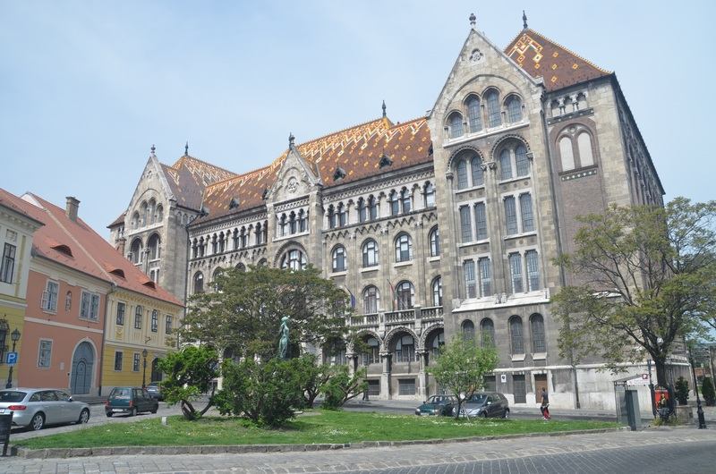
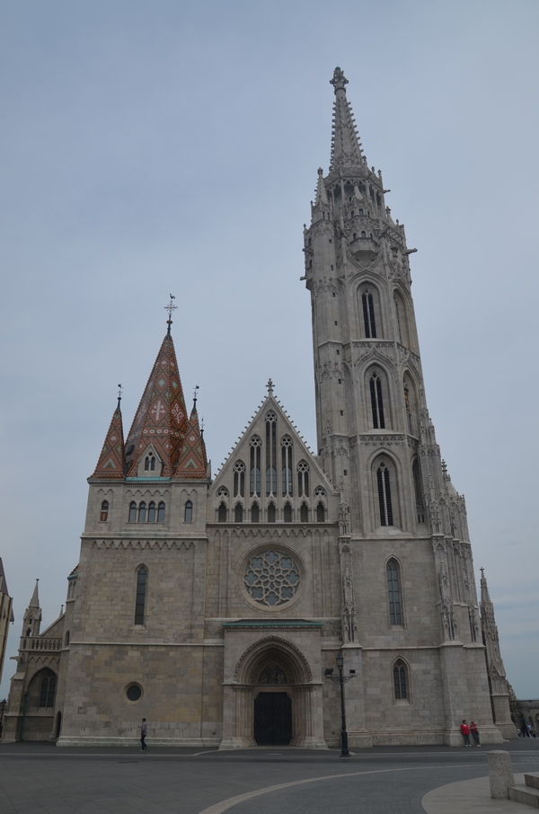
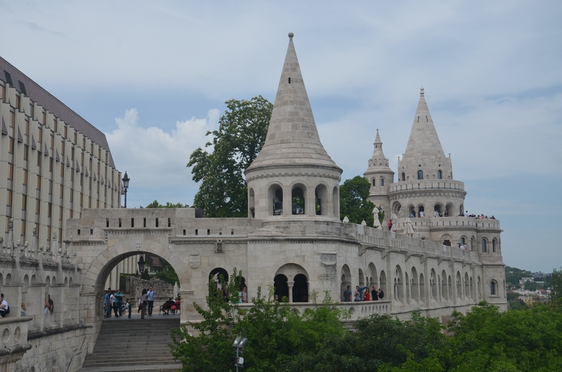
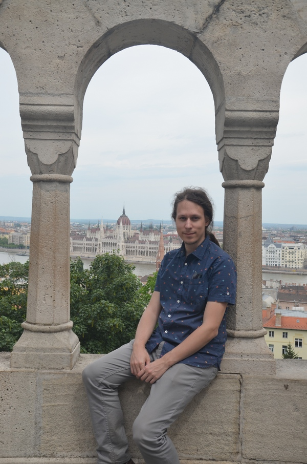
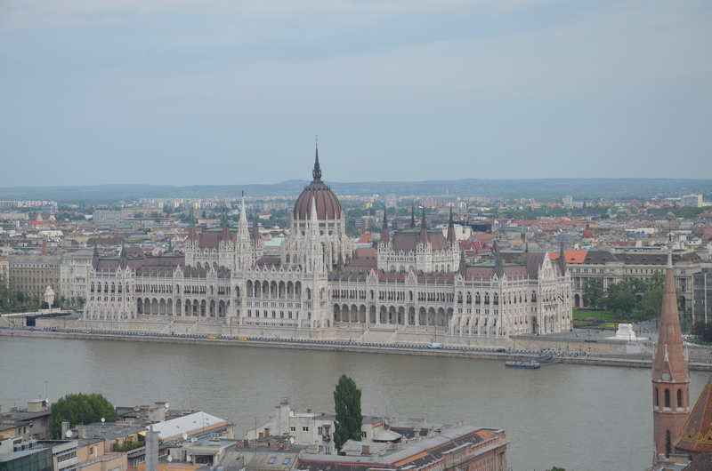
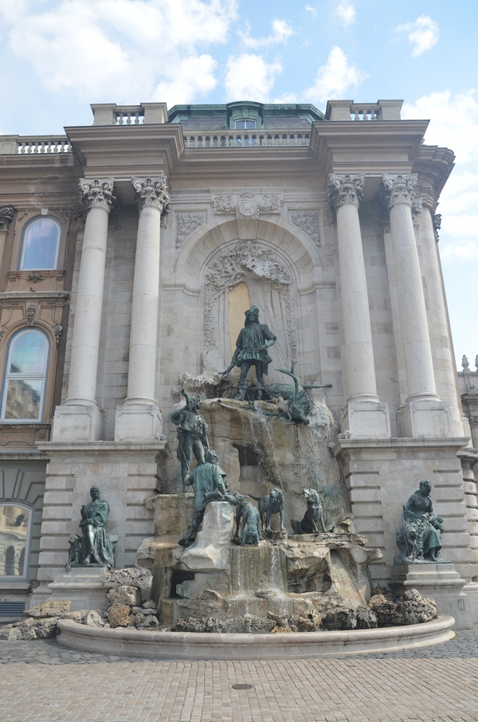
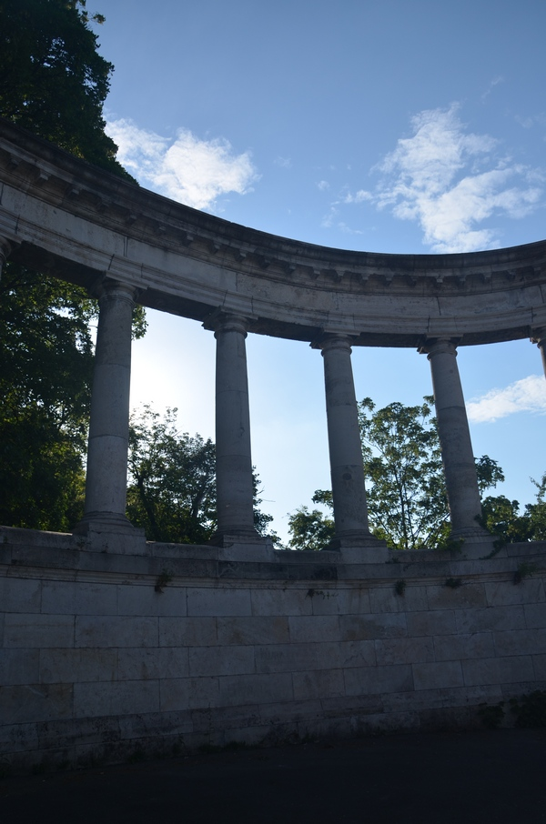
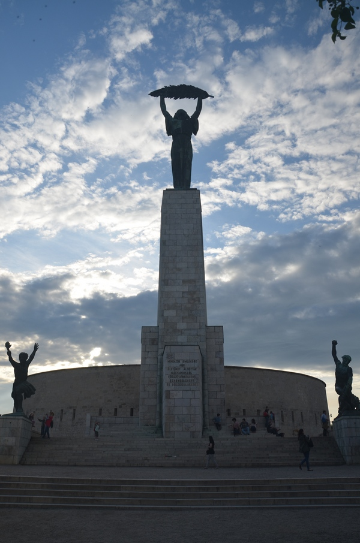
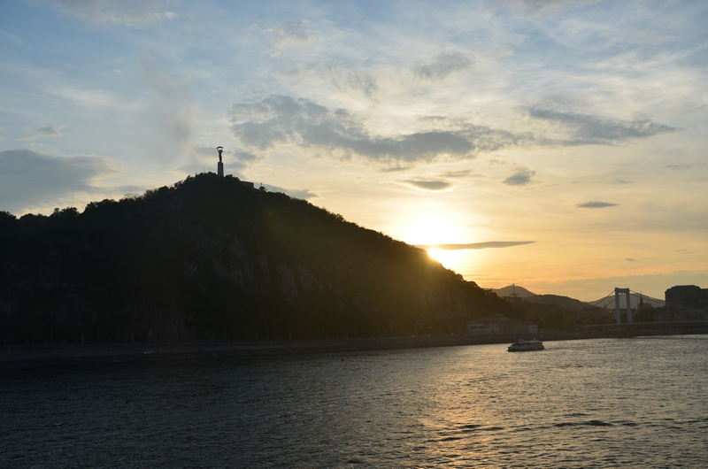

Ani v sobotu nás počasí nezklamalo a bylo krásně slunečno (a došlo i na spálená ramena, jojo). Celkově mi přišlo, že v Maďarsku bylo mnohem tepleji než u nás, a to přitom předpověď počasí nevypadala úplně růžově. Sobotu jsme se rozhodli zasvětit protějšímu břehu Dunaje, kde se nachází kopec Budín a na něm spousta zajímavých památek. Začali jsme na zastávce metra Batthyány Tér, u farního kostela Szent Anna Templom s barokním portálem a malbou ráje na stropě. Z nábřeží jsme si užili krásný výhled přímo na budovu Parlamentu, a poté už začala cesta stoupat prudce vzhůru.

Budova maďarského archivu
Po výstupu nás čekala procházka historickými uličkami čtvrti Vár, které nás dovedly až ke kostelu Mátyás templom a hlavně k Rybářské baště. Ta byla postavena roku 1905 na místě středověkého rybího trhu. Z teras a ochozu se nabízí překrásný pohled na město - ten den nás ovšem čekaly ještě o něco lepší vyhlídky :-).

Mátyás templom

Rybářská bašta

Na baště

Výhled na parlament
Po odpočinku na Rybářské baště jsme pokračovali směrem ke královskému paláci Királyi vár, v jehož křídlech naleznete významná muzea - Muzeum historie Budapešti a Národní maďarskou galerii. Na nádvoří pak můžete obdivovat působivou Matyášovu fontánu, která znázorňuje lov, kdy se Krásná Helena zamilovala do krále Matyáše Korvína.

Matyášova fontána
Na tomto místě už nás definitivně dostihl hlad, a tak jsme se rozhodli sejít z kopce dolů a najít nějakou příjemnou restauraci. Nakonec jsme zakotvili v Lánchíd Söröző, sympatickém podniku vyzdobeném hudebními retro plakáty a stylovými fotkami. Opět jsme nepohrdli všudypřítomnou gulášovkou, která se tu podává v poctivém hrnci :D, a maďarským pivem.
Přejezení jsme se pomalu odkulili na cestu k poslednímu cíli našeho putování - hoře Gellért. Při drápání se nahoru budete určitě míjet památník sv. Gerarda, který je patronem Budapešti. Památník se nachází na místě Gerardova umučení. Chudák Gerard nedopadl moc dobře - po smrti svatého Štěpána, zaníceného křesťana, svrhli revoltující pohani biskupa z vršku kopce, který pak dostal jeho jméno. Dnes se zde nachází obrovská Gerardova socha vztyčená před polokruhovou kolonádou. Bohužel je tak velká, že se nám nevlezla do objektivu :-D!

Památník sv. Gerarda
A to už jsme se pomalu blížili do finiše - k Citadelle. Na samém vrcholku kopce se vám naskytne ohromující výhled na celé město na Dunaji. Nad Budapeští bdí kromě Gerarda také 14 metrová socha Svobody, kterou vztyčila Rudá armáda roku 1945 na oslavu vítězství nad Němci. Po “boku” jí stojí sochy “Pokroku” a “Boje proti zlu”. Tento památník je podle mě jedno z nejpůsobivějších míst v Budapešti a rozhodně za ten náročný výstup nahoru stojí.

Maďarská socha Svobody
A protože nám začalo zapadat slunce, byl nejvyšší čas vydat se na sestup dolů. Lepší zakončení našeho pobytu v Budapešti jsme si ani nemohli přát. Naposled jsme měli jako na dlani všechna místa, která jsme během těch pár dnů stačili navštívit.

Rozloučení s Budapeští
Snad se vám putování po Budapešti líbilo stejně jako nám a už teď můžu slíbit další vlnu cestovatelských příspěvků - tentokrát z trochu exotičtější destinace ;-)…